Home
I have gone on a few holidays across to the world visit very interesting Cities and I am planning to go on more on the near future.
Join me on my adventure as we fill up this Travel Log!
France
France is a very popular location for holidays because it is renown for being the city of love and its variety of famous monuments.
One of the most visited monument is the Eiffel Tower, which is a great place to take your loved one or with family to see the beautiful city of France from a high perspective.
DisneyLand Paris is an all time favourite especially for younger visiters, bringing your childhood to life by going through the magical world of Disney.
Holland
Holland is a beautiful country full of life and greenery. One thing I have learned about is that the locals are really respectful of theor environment, there is no litter or filth on the roads and pavements and they encourage actions to reduce pollution by cycling and using public transport.
A sight to behold in Holland is the Tulip fileds, an entire field would be populated by them and in rows of different colours, it is indeed a must visit spot.
 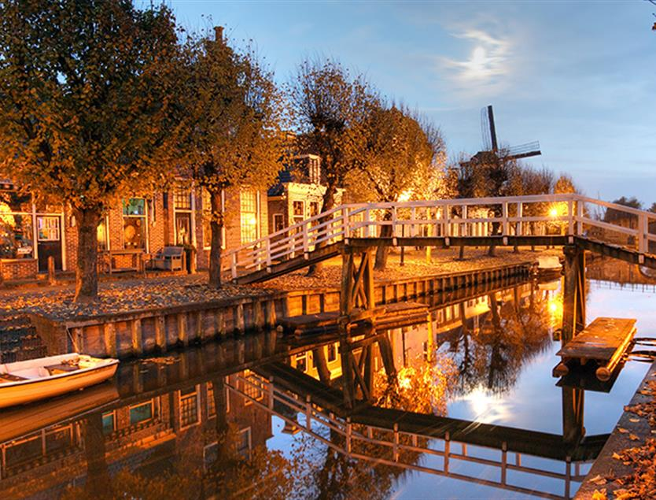
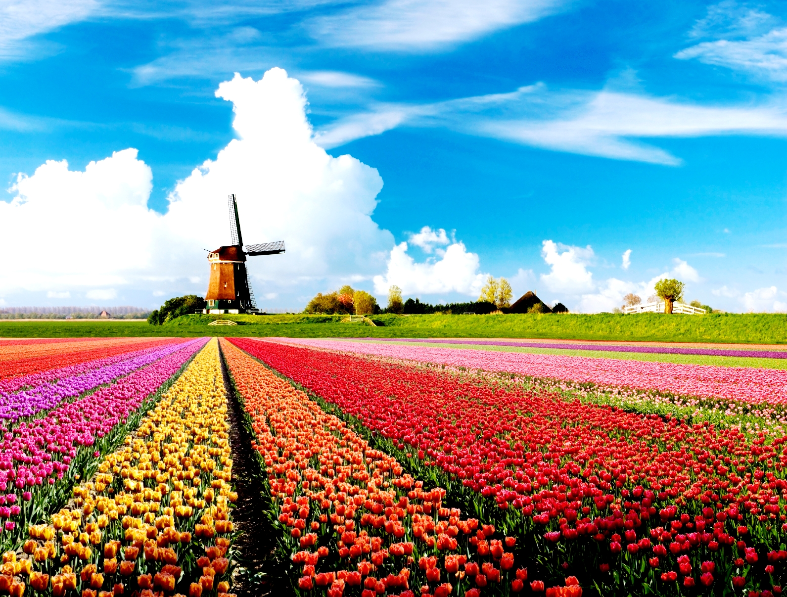
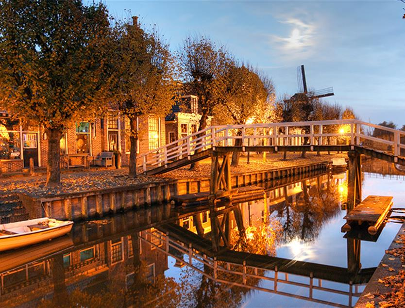
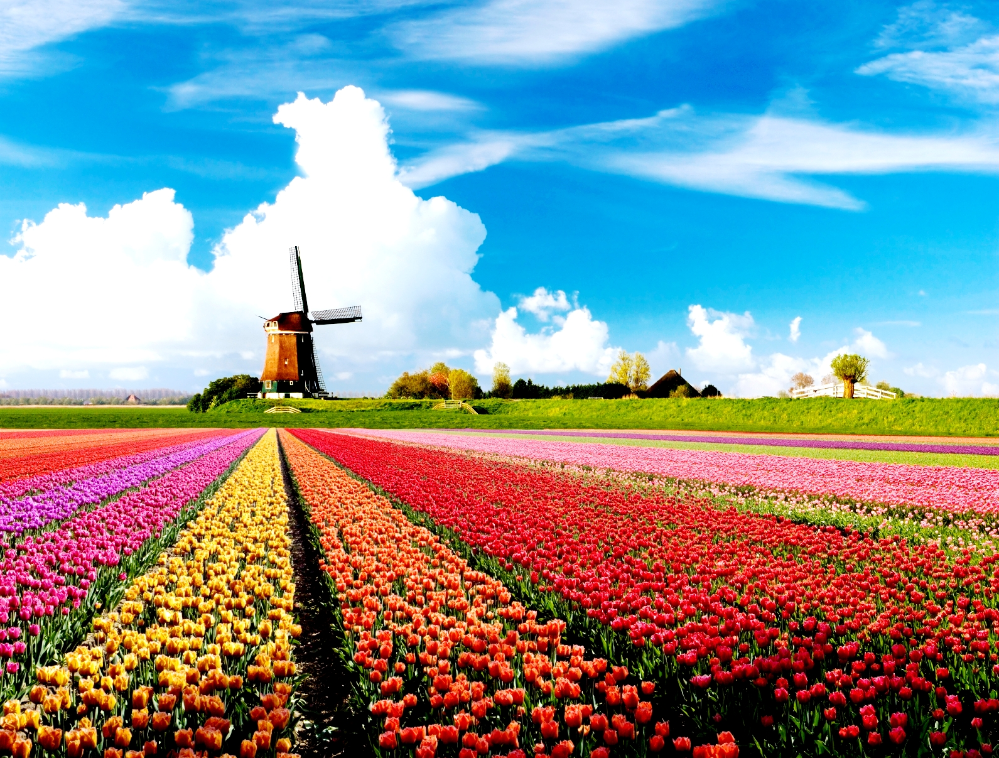
Sri Lanka
I have visited SriLanka with my family both times I went. The first trip mostly consisted of meeting family members that I have never seen before but on the second trip, we made sure to go sightseeing. Hence, we decided to travel to the middle of SriLanka, in a place called Kandy and Nuwara Eliya. There are gorgeous sceneries, tea factories and even an elephgant orphanage in Kandy. Also, Nuwara Eliya is filled with mountains and we booked a house to stay in at the peak on one of those mountains. Going exploring the culture of my origins where my parents are from gave me a good insight of how many amazing wonders this world can provide for us.
 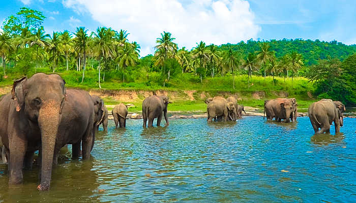
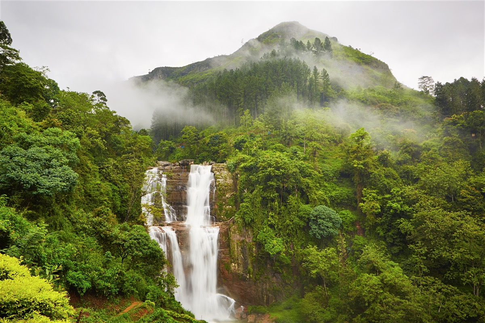
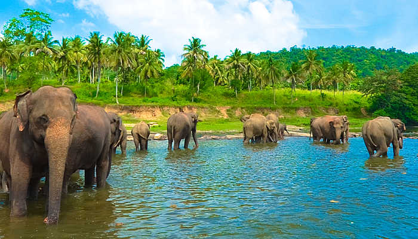
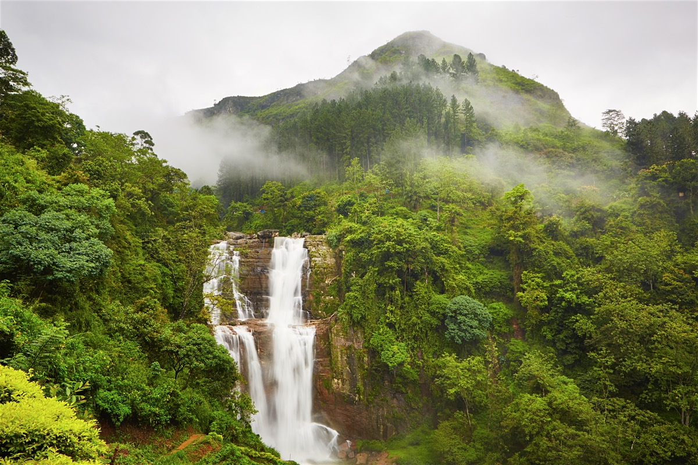
Switzerland
To be exact, I visited Basel and Luzern for a family trip but I still got the opportunity to explore. Alas, I only had the opportunity to be there for a few days to visit family. I still managed to make time to see around Luzern and take in the view and the magnificent bridges they have there. The locals are litterally the friendliest people I have ever met while travelling and it made me want to go there again for sure. Plus technology over there is really cheap. ;)
 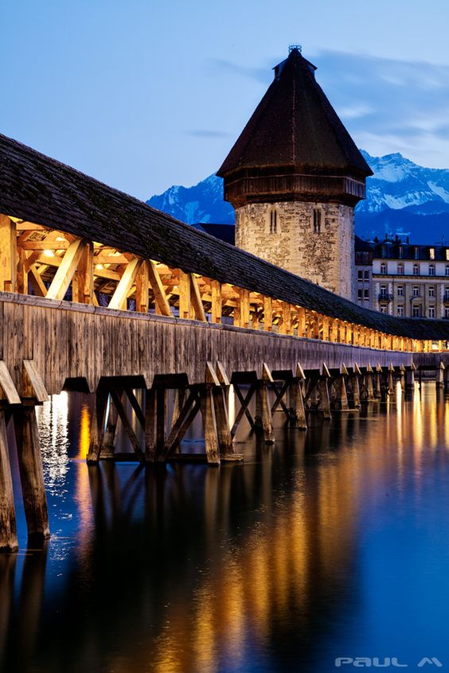
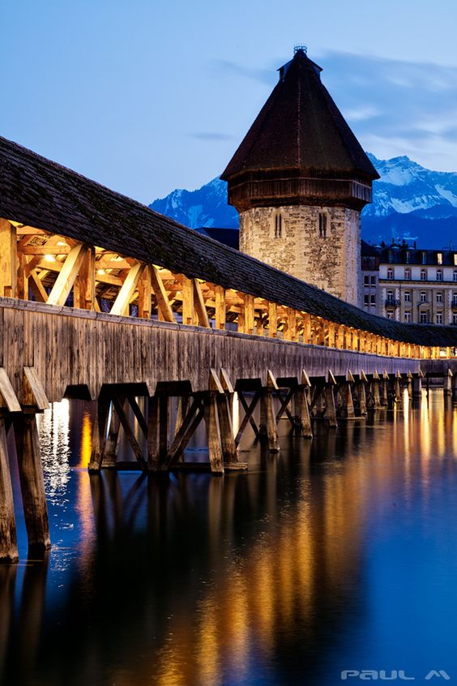
Prague
Prague is a very good contry to go to for a getaway, people mainly go there for cheap drinks and cigarettes. Also, there are also plenty of history in Prague which I have visited. One of those visits was a Castle that was built by an old King and the entrance is free which I found very strange because they were not trying to make money from tourism but this is an advantage none the less. The streets are intregate and beautiful with a very roman vibe. I would recommend to visit!

 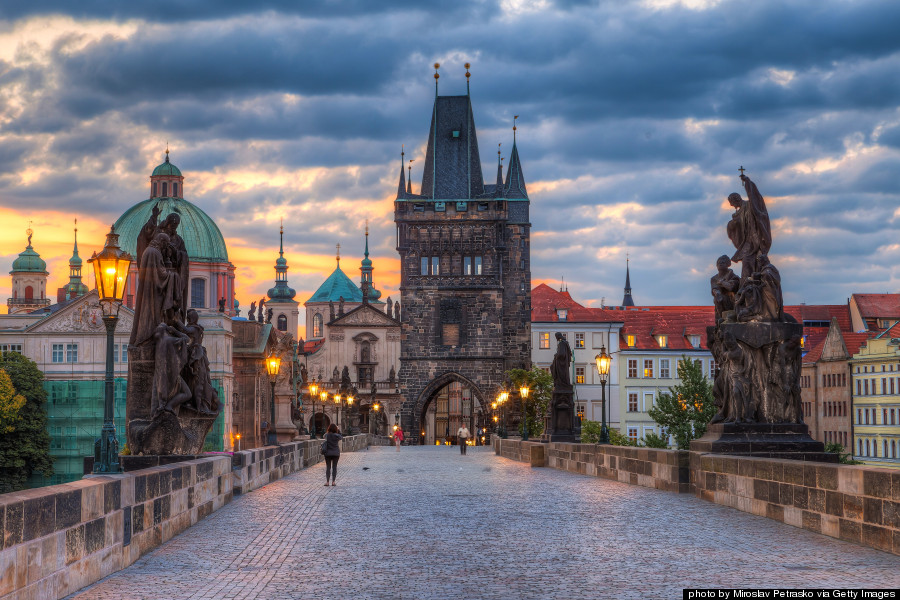
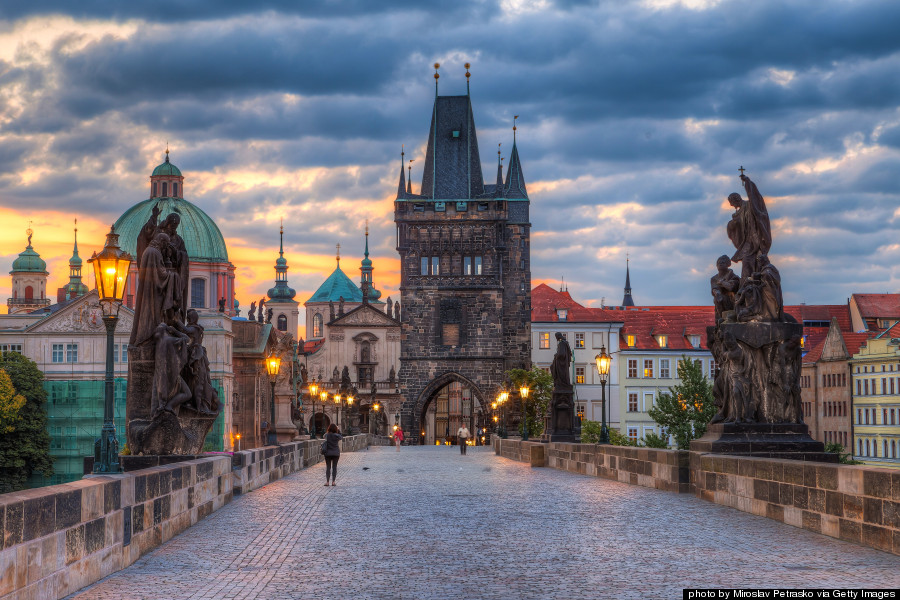
Where to next?
Which country should I go visit next?